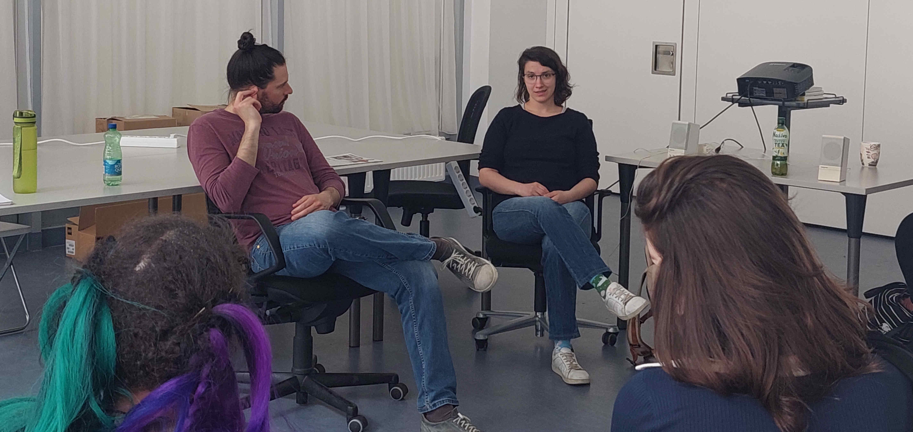

Menschen aus der IT
Contents
Menschen aus der IT#
Was machen Mensche die in der IT arbeiten? Was gefällt ihnen an ihrem Job? Wieso haben sie sich dafür entschieden?
Um diese und ähnliche Fragen zu beantworten, laden wir Gäste ein, die sich für uns Zeit nehmen damit wir sie ein bisschen kennen lernen und dadurch Einblicke in ihre persönliche Geschichte nehmen können.
Game Dev (Sophie Amelien)#
Exercise 32 (Unsere Fragen an Sophie (Game Dev))
Sophie Amelien ist Spieleentwicklerin. Sie arbeitet als Programmiererin bei Mi’pu’mi Games.
Fragen:
Was macht die Firma?
Kennst du vielleicht sogar eines der Spiele?
Was glaubst du, macht eine Spieleentwicklerin?
Welche Fragen möchtest du Sophie stellen?
Sophie war so freundlich uns nach einem ihrer vergangenen Besuche folgende Dokumente zur Verfügung zu stellen:
Hier noch die alten Versionen:
Projektleiterin und Scrum Master (Dagmar Labes)#
Exercise 33 (Unsere Fragen an Dagmar (Projektleiterin & Scrum Master))
Dagmar Labes ist Projektleiterin und Scrum Master. Sie arbeitet bei Sportradar.
Fragen:
Was macht die Firma?
Um welche Branche handelt es sich?
Was macht eine Projektleitern?
Was ist ein Scrum Master?
Welche Fragen möchtest du Dagmar stellen?
Dagmar war so freundlich uns ihre Slides zu schicken:
Softwareentwicklerin (Krisztina Horvat-Schwarcz)#
Exercise 34 (Gastvortragende: Krisztina Horvath-Schwarcz)
Sie hat einen Ausbildungskurs bei everyone codes absolviert und arbeitet jetzt bei als Entwicklerin bei Viesure.
Fragen:
Was macht die Firma?
Um welche Branche handelt es sich?
Welche Fragen möchtest du Krisztina stellen?
Mechatronikerin (Julia Mittas)#
Exercise 35 (Gastvortragende: Julia Mittas)
Sie hat beim BBRZ eine Ausbildung zur Mechatronikerin absolviert.
Zu ihrer Geschichte gab es sogar einen Beitrag in der Zeitschrift der Arbeiterkammer.
Fragen:p
Was ist Mechatronik?
Wo begegnet uns Mechatronik im Alltag?
Was hat Mechatronik mit IT zu tun?
Was ist das BBRZ?
Welche Fragen möchtest du Julia stellen?
Ehemalige Teilnehmerinnen#
Exercise 36 (Gastvortragende: Ehemalige Teilnehmerinnen)
Der Berufsorientierungskurs „IT, ist das was für mich?“ hat schon ein paar Mal stattgefunden.
Was ist aus unseren ehemaligen Teilnehmerinnen geworden? Was machen sie jetzt? Was konnten sie aus dem Kurs für sich mitnehmen?
Für solche Fragen ist Zeit, wenn sie zu uns auf Besuch kommen.
Gibt es noch andere Fragen, die du stellen möchtest?